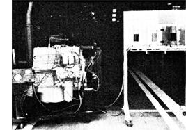

A universal Mercedes diesel the six cylinder Type 352 serves as a ""test bed"" for Brazilian alternative fuel research. This engine operates on diesel fuel, a mixture of diesel fuel and gasoline, or a blend of diesel fuel and vegetable oil. With minor adjustments, it burns alcohol, too!